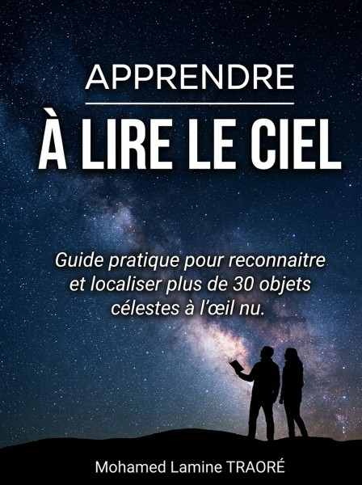

Reconnaissez et montrez plus de 30 objets célestes : étoiles, constellations, planètes et même une galaxie. Sans télescope, sans jumelles, même en ville.
Livraison et paiement sécurisés par Amazon.
Chaque soir, le ciel est là. Mais pour la plupart d'entre nous, ce ne sont que des points lumineux. Ce livre change ça en quelques minutes de lecture par objet.
Vous découvrirez que certaines étoiles sont rouges, d'autres bleues. Que la lumière de Sirius a voyagé plus de 8 ans avant d'arriver jusqu'à vos yeux. Que la galaxie d'Andromède, à 2,5 millions d'années-lumière, est visible sans instrument. Et que depuis que vous avez commencé à lire cette page, vous avez déjà parcouru plusieurs milliers de kilomètres avec la Terre.
Vous n'avez jamais appris le ciel et vous voulez une méthode simple, sans termes techniques inutiles.
La pollution lumineuse vous décourage ? Les repères du livre fonctionnent même sous un ciel éclairé.
Vous voulez montrer Orion, Sirius ou Jupiter à vos enfants, vos amis, vos élèves.
Croix du Sud, Canopus, Achernar : découvrez le ciel de l'hémisphère sud, que peu de guides en français expliquent.
La constellation la plus facile du ciel. Son Baudrier, trois étoiles alignées, devient votre point de départ.
Du Baudrier vers Sirius, de la Grande Casserole vers Arcturus puis Spica : le livre vous apprend à glisser d'un astre à l'autre.
Couleur, éclat, forme voisine : chaque objet a sa vérification, pour être sûr de ne pas se tromper.
Un point fort du livre : les schémas existent en deux versions, Bamako (12° N) et Paris (49° N), parce qu'une même constellation n'apparaît pas pareil selon l'endroit où l'on se trouve.
« Repérez le Baudrier d'Orion : identifiez les trois étoiles alignées qui forment la ceinture d'Orion. Imaginez une ligne prolongeant cet alignement. Votre regard va alors buter sur un éclat bleu-blanc spectaculaire, impossible à manquer. Vous y êtes : c'est Sirius, le joyau du Grand Chien. »
Extrait du chapitre III.
Mohamed Lamine Traoré est un autodidacte passionné d'astronomie. Il n'a pas écrit un traité d'astrophysique, mais un guide pratique, avec ses techniques et ses astuces personnelles, pour que chacun puisse apprendre à lire le ciel par l'observation.
« Le plus grand instrument de l'astronome n'est ni un télescope sophistiqué ni un objectif de pointe : ce sont vos propres yeux. »
Non. Toute la méthode repose sur l'œil nu.
Oui. Le livre est pensé pour les ciels pollués par la lumière : on part des astres les plus brillants et on suit des repères simples.
Oui. Les repères sont donnés pour Bamako (12° N), avec des comparaisons pour Paris (49° N). Vous y trouverez aussi les astres du ciel austral : Croix du Sud, Canopus, Achernar, Alpha du Centaure.
Oui, avec les schémas pour Paris. Les astres trop au sud pour être vus depuis l'Europe sont signalés comme tels.
Chaque objet a sa saison. Par exemple Orion de novembre à février, le Scorpion de mai à août, Cassiopée de septembre à décembre.
Le broché se feuillette dehors, avec une lampe rouge ou faible. L'ebook se lit sur téléphone et reste toujours avec vous. Les deux contiennent les mêmes schémas.
Laissez votre e-mail pour recevoir une fiche d'une page à emporter dehors, ainsi que les conseils d'observation du moment. Désinscription possible à tout moment.
Choisissez votre format.